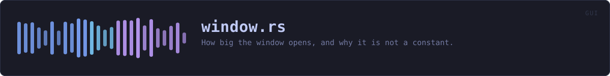

crates/veilvoice-gui/src/window.rs
veilvoice-gui · 244 lines · read the source here · or on GitHub
How big the window opens, and why it is not a constant.
The two failures a single number produces
The window used to open at 1100 by 720 always. That is too small for this application: the longest panel is 1288 pixels of content, so it opened on a panel with its bottom third missing, and a reader had to discover the scrollbar to find out there was more.
Opening at 1400 by 1000 instead fixes that and breaks something else. A 1366 by 768 laptop is still a common machine, and a window taller than the screen opens with its lower edge, and often its buttons, off the bottom. That looks like a broken program rather than a generous one.
So the size is not a constant. It is a preference, clamped to what the screen can actually show, worked out on the first frame when the monitor size is known. On a large display the window opens big enough to read; on a small one it opens as big as fits and scrolls, which is what scrolling is for.
The floor is about width, and it stays where it was
Everything is inside one scroll area, so a short window loses nothing. Width is different: the layout is column-based and below roughly 720 across the columns start to overlap. That floor is enforced by the window manager through with_min_inner_size, so a person who wants a small window can still drag it down to the floor. Nothing here stops them; it stops the program from opening somewhere unreadable, which is a different thing.
WHAT THIS FILE CONTAINS
244 lines defining 3 functions (3 public), 0 types and 3 constants. Everything below is read out of the source, so it cannot disagree with the code.
What happens when it runs. These are the ways in: public, and nothing else in this file calls them, so they are what an outside caller reaches first.
requested_sizeline 64 · The size asked for by --size <W>x<H>, if one was and it parses.
reachessize_fromopening_sizeline 100 · The size to open at on this screen, given the monitor and what was asked for on the command line.
WHAT CALLS WHAT
The functions this file defines, and the calls between them. An edge means the callee's name appears, called, inside the caller's body. This is a syntactic reading, not a type-resolved one.
The same graph as Mermaid source
%%{init: {"theme":"base","themeVariables":{"background":"#1a1b26","primaryColor":"#1f2335","primaryTextColor":"#c0caf5","primaryBorderColor":"#7aa2f7","secondaryColor":"#16161e","tertiaryColor":"#16161e","lineColor":"#737aa2","textColor":"#c0caf5","mainBkg":"#1f2335","nodeBorder":"#7aa2f7","clusterBkg":"#16161e","clusterBorder":"#2f3549","fontFamily":"ui-monospace, SFMono-Regular, Consolas, monospace","fontSize":"14px"}}}%%
flowchart TD
n_requested_size(["requested_size<br/>line 64"])
n_size_from["size_from<br/>line 73"]
n_opening_size(["opening_size<br/>line 100"])
n_requested_size --> n_size_from
click n_requested_size href "https://github.com/tilas01/veilvoice/blob/main/crates/veilvoice-gui/src/window.rs#L64" "open the source"
click n_size_from href "https://github.com/tilas01/veilvoice/blob/main/crates/veilvoice-gui/src/window.rs#L73" "open the source"
click n_opening_size href "https://github.com/tilas01/veilvoice/blob/main/crates/veilvoice-gui/src/window.rs#L100" "open the source"
classDef entry fill:#1f2335,stroke:#7aa2f7,color:#c0caf5
class n_requested_size,n_opening_size entry
classDef api fill:#1f2335,stroke:#7dcfff,color:#c0caf5
class n_size_from apiThis site loads no third-party script, so it cannot run Mermaid; the diagram above is the same nodes and edges drawn by the generator instead. GitHub renders the source below directly.
ITEMS
| Item | Line | Documentation |
|---|---|---|
PREFERRED pub const | 36 | The size the window opens at when the screen has room for it. |
MINIMUM pub const | 39 | The floor, enforced by the window manager. |
CHROME const | 53 | What the window has to leave for the desktop, in pixels. |
requested_size pub fn | 64 | The size asked for by --size <W>x<H>, if one was and it parses. |
size_from pub fn | 73 | The parsing half, separated from the environment so it can be tested. |
opening_size pub fn | 100 | The size to open at on this screen, given the monitor and what was asked for on the command line. |
opening mod | 186 |